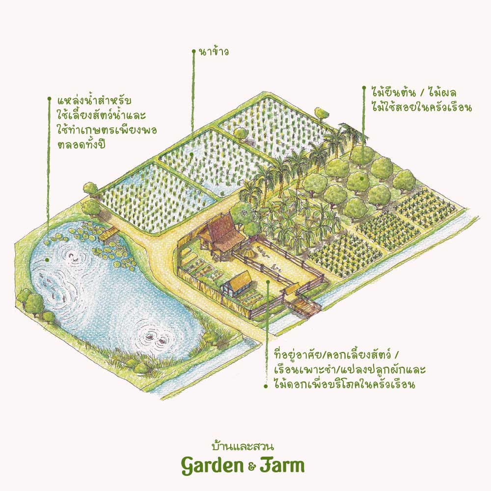

งานเกษตร คือ งานที่ปฏิบัติเกี่ยวกับที่ดินเพื่อให้เกิดผลผลิต โดยอาศัยความรู้ ความชำนาญ ประสบการณ์ ทรัพยากรธรรมชาติให้ได้ผลผลิตต่างๆความสำคัญของการเกษตร มนุษย์รู้จักใช้ประโยชน์อย่างมากมายจากพืช สัตว์ โดยใช้เป็นวัตถุดิบในการผลิตปัจจัย ๔ คือ อาหาร เครื่องนุ่งห่ม ที่อยู่อาศัยและยารักษาโรค โดยมนุษย์รู้จักเก็บเกี่ยวผลผลิตทางเกษตร นำไปประกอบอาหารรับประทาน สร้างความเจริญเติบโตแก่ร่างกาย นำ ส่วนต่าง ๆ ของพืชเส้นใยไปผลิตสิ่งทอหรือใช้หนังสัตว์ทำเครื่องนุ่งห่ม ปลูกป่าเพื่อนำไม้ไป เป็นอุปกรณ์การก่อสร้างสร้างที่พักอาศัย อาคารสถานที่ ทำเฟอร์นิเจอร์ เครื่องใช้ต่าง ๆ และปลูกพืชสมุนไพร เพื่อนำไปใช้เป็นยารักษาโรค การเกษตรมีความสำคัญเป็นอย่างยิ่ง ในการพัฒนาเศรษฐกิจและพัฒนาประเทศเนื่องจาก รายได้ส่วนใหญ่ของประเทศมาจากสินค้าเกษตรเป็นสำคัญ และการเกษตรเป็นอาชีพหลัก ของประเทศไทย ประชากรส่วนใหญ่ประกอบอาชีพเกษตรกรรม
มนุษย์รู้จักใช้ประโยชน์อย่างมากมายจากพืช สัตว์ โดยใช้เป็นวัตถุดิบในการผลิต ปัจจัย ๔ คือ อาหาร เครื่องนุ่งห่ม ที่อยู่อาศัยและยารักษาโรค โดยมนุษย์รู้จักเก็บเกี่ยว ผลผลิตทางเกษตร นำไปประกอบอาหารรับประทาน สร้างความเจริญเติบโตแก่ร่างกาย นำ ส่วนต่าง ๆ ของพืชเส้นใยไปผลิตสิ่งทอหรือใช้หนังสัตว์ทำเครื่องนุ่งห่ม ปลูกป่าเพื่อนำไม้ไป เป็นอุปกรณ์การก่อสร้างสร้างที่พักอาศัย อาคารสถานที่ ทำเฟอร์นิเจอร์ เครื่องใช้ต่าง ๆ และปลูกพืชสมุนไพร เพื่อนำไปใช้เป็นยารักษาโรค การเกษตรมีความสำคัญเป็นอย่างยิ่ง ในการพัฒนาเศรษฐกิจและพัฒนาประเทศเนื่องจาก รายได้ส่วนใหญ่ของประเทศมาจากสินค้าเกษตรเป็นสำคัญ และการเกษตรเป็นอาชีพหลัก ของประเทศไทย ประชากรส่วนใหญ่ประกอบอาชีพเกษตรกรรม
พืชสวน หมายถึง พืชที่ปลูกในเนื้อที่น้อยสามารถให้ผลตอบแทนสูง เช่น-ไม้ดอกไม้
ประดับ พืชผักสวนครัว ไม้ผล
พืชไร่ หมายถึง พืชที่ปลูกใช้เนื้อที่มากมีการเจริญเติบโตเร็วไม่ต้องการดูแลรักษามาก
ประชาชนส่วนใหญ่ที่อยู่ตามชนบทจะประกอบอาชีพทำนา ทำไร่และ
มักเลี้ยงสัตว์ควบคู่ไปด้วยเพื่อใช้เป็นอาหาร แรงงานในการเพาะปลูก เช่น
๑. เพื่อไว้ใช้บริโภค
๒. เพื่อไว้ใช้แรงงาน
๓. เพื่อประกอบอาชีพ
๔. เพื่อเสริมรายได้
๕. เพื่อใช้ผลิตภัณฑ์จากสัตว์ทำเครื่องนุ่งห่มของใช้และยารักษาโรค
๖. เพื่อความสวยงามและเพลิดเพลิน
๗. เพื่อใช้ประโยชน์ในการทดลองทางวิทยาศาสตร์หรือทางการแพทย์
๑. การทำประมงน้ำจืด
๒. การทำประมงน้ำเค็ม
๓. การทำประมงน้ำกร่อย
เป็นการจัดระบบกิจกรรมการเกษตร ได้แก่ ปลูกพืชเลี้ยง
สัตว์ ประมง ให้มีการผสมผสานและเกื้อกูลในการผลิตซึ่งกันและกัน เช่น
๔.๑. เกษตรทฤษฎีใหม่ คือ การเกษตรที่มีหลักในการแก้ไขปัญหาจากการปลูก
พืช และความเป็นอยู่ของเกษตรกรโดยเน้นในเรื่องการจัดสรรที่ดินโดยแบ่งเป็น
ส่วนๆ ในอัตราส่วน 30:30:30:10 ได้แก่ พื้นที่น้ำ พื้นที่ดินเพื่อเป็นที่นาปลูก
ข้าว พื้นที่ดินสำหรับปลูกพืชไร่
๔.๒. การเกษตรแบบยังชีพ หมายถึง การเพาะปลูก แบบดั้งเดิมแบบหนึ่งโดย
การปลูกพืชใช้กินเป็นอาหารภายในครอบครัวไม่ได้ปลูกมากเหลือใช้พอที่จะส่งไป
ขายนอกท้องถิ่นได้
๔.๓. การเกษตรธรรมชาติ การเกษตรแบบที่กลับไปหาธรรมชาติหรือ
การเกษตรแบบฟื้นฟูธรรมชาติให้กลับมาดั้งเดิมนั่นเอง
๔.๔. การเกษตรแบบยั่งยืน คือ การเกษตรที่เกื้อกูลซึ่งกันและกันเพื่อรักษาดุลย
ภาพทางธรรมชาติและปรับปรุงสิ่งแวดล้อม
หมายถึง เครื่องมือที่นำมาใช้ในการทำงานเกษตร เพื่อให้เกิดการ
ทุ่นแรงและทำให้ได้ผลผลิตที่ดียิ่งขึ้น แบ่งออกเป็น ๒ ประเภท
๑.เครื่องมือเกษตรเกี่ยวกับงานดิน เช่น จอบ เสียม ปุ้งกี๋ เป็นต้น
๒.เครื่องมือเกษตรเกี่ยวกับงานพืช เช่น บัวรดน้ำ ส้อมพรวนดิน เป็นต้น
๑. ทำความสะอาดเครื่องมือเกษตรหลังจากใช้งานเสร็จแล้วทุกครั้ง
๒. เครื่องมือที่มีคม เช่น จอบ เสียม กรรไกรตัดหญ้า ควรลับให้คมอยู่เสมอ
๓. เครื่องมือที่เป็นโลหะควรทาน้ำมันเพื่อป้องกันสนิม
๔. เก็บเครื่องมือให้เป็นระเบียบและสะดวกต่อการหยิบใช้
การทำเกษตรยุคปัจจุบันมีหลากหลายรูปแบบ หนึ่งในการทำเกษตรที่ยั่งยืนและได้ผลดี สามารถใช้ได้กับทุกพื้นที่คือการทำ เกษตรผสมผสาน ตามแนวทางเกษตรทฤษฎีใหม่ มีการแบ่งพื้นที่เพื่อใช้ให้เกิดประโยชน์สูงสุด โดยเริ่มจากจัดการดินและน้ำให้เพียงพอ ปลูกพืช ไม้ยืนต้น เลี้ยงสัตว์ เพื่อสร้างระบบนิเวศที่ดี ปลูกป่าไว้ใช้เป็นพลังงาน อนุรักษ์พันธุกรรมพืชเพื่อสร้างความหลากหลาย ทำให้เกิดความมั่นคงทางอาหาร เกษตรกรสามารถเลี้ยงตัวเองได้ มีกิน มีอยู่ มีใช้ในพื้นที่ของตัวเอง เมื่อบริหารพื้นที่ได้สมดุลก็สามารถสร้างผลผลิตที่ดี และขยับขยายไปสู่การทำธุรกิจเกษตรอย่างยั่งยืน โดยอาจจะรวมกลุ่มร่วมกับเครือข่ายเกษตรกรที่ดำเนินแนวทางเดียวกันเพื่อแลกเปลี่ยนความรู้ เทคโนโลยี เครื่องมือเกษตรต่างๆ ตลอดจนตลาดผู้บริโภคของตนเอง เป็นต้น
